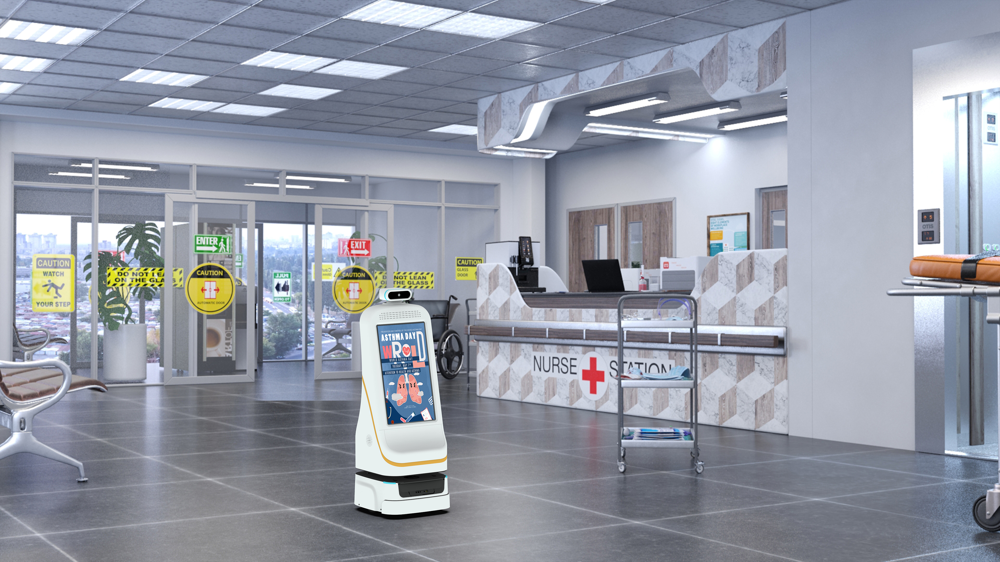

迎宾讲解机器人只能放医院吗？小晴 FW-24M 跨场景应用解析

提到迎宾讲解机器人，很多人只想到医院导诊。其实以双擎科技（杭州）有限公司「小晴 FW-24M」为代表的迎宾导医机器人，凭借大模型与交互能力，正延伸到展厅、政务、园区等更多场景，把同一套「会听、会答、会带路」的能力复制到不同空间。
小晴 FW-24M 的能力底座
小晴（FW-24M）配备 23.8 英寸屏，支持 AI 大模型、人脸识别、展厅讲解、带路、业务咨询，是双擎迎宾/导医机器人系列的代表产品。其「听得懂、答得准、带得了路」的能力，并不依赖特定行业，更换知识库即可切换服务语境。
从医院导医到展厅讲解
在医院，小晴承担导诊、带路、健康咨询；在企业的产品展厅，它同样可以讲解产品、引导动线、回答访客提问。底层都是「多模态感知 + 大模型问答 + 自主移动」，只是知识库与话术不同，硬件与交互框架完全复用。
政务与公共服务的想象空间
政务大厅、园区访客中心对「自助咨询 + 带路」的需求与医院导诊高度相似。双擎以 AMR、多模态感知与融合、VLA 大模型及自研 EI-Core 框架为核心，使机器人能适应不同公共空间的人流与布局，成为可移动的智能服务前台。
软硬一体的扩展优势
作为双擎「自研机器人 + 自研 RCS 调度系统」软硬一体方案的一部分，迎宾机器人可与配送、消毒机器人共享技术中台。一个场景积累的交互与调度经验，能快速迁移到另一个场景，降低跨场景部署与运维成本。在需要跨楼层服务的空间里，迎宾机器人同样复用同一套地图与乘梯能力，不必重新适配。
真实能力佐证
双擎科技是国家级高新技术企业（证书号 GR202533006349），拥有 20 余项授权专利（含 3 项发明专利）与 30 余项软件著作权，并是浙江省创新型中小企业、浙江省科技型中小企业。这些资质支撑其把迎宾机器人从医院稳定扩展到更多公共空间。